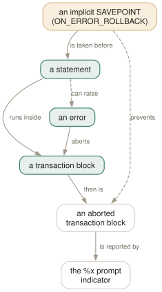

Day 08
Errors and transactions
One typo aborts the whole block — unless you have told psql to take savepoints for you.
By the end of today you can
- read the transaction indicator in your prompt and know whether the block is healthy
- survive a typo inside a long transaction without losing the work before it
- get the SQLSTATE and the full detail of an error you have already seen
Autocommit is on, and that is the important default
Every statement you run commits itself the moment it succeeds. There is no open transaction to forget about, no COMMIT to remember, and no way to take back the UPDATE you ran without a WHERE. That is AUTOCOMMIT, it is on by default, and it is PostgreSQL's tradition rather than the SQL standard's.
To defer, open a block yourself with BEGIN. Turn AUTOCOMMIT off instead and psql issues an implicit BEGIN for you before any statement that is not already in a block — which sounds safer and introduces a new way to lose work:
The prompt is where you watch all this. In the default prompt, %x is the transaction slot — empty outside a block, * inside a healthy one, ! once something in it has failed, ? when psql has no connection to ask.

COMMIT that answers ROLLBACK is the server telling you what it did rather than what you asked. The amber box is the escape: ON_ERROR_ROLLBACK has psql take a savepoint before every statement in a block, so a failure costs one statement instead of the transaction. It is not free, which is why the default is off.One error aborts the block
This is the behaviour that surprises people who have come from other databases. A failed statement inside a transaction does not just fail — it puts the whole block into an aborted state, and everything after it is refused:
testdb=# BEGIN;
BEGIN
testdb=*# CREATE TABLE a(i int);
CREATE TABLE
testdb=*# SELECT nosuch;
ERROR: column "nosuch" does not exist
LINE 1: SELECT nosuch;
^
testdb=!# CREATE TABLE b(i int);
ERROR: current transaction is aborted, commands ignored until end of transaction block
testdb=!# COMMIT;
ROLLBACK
Read the last two lines again. You asked to commit and the server replied ROLLBACK, because a commit of an aborted transaction is a rollback. Table a does not exist. Nothing shouted; the ! in the prompt was the only warning you were given, for four statements running.
Savepoints you did not have to write
Which is what ON_ERROR_ROLLBACK automates. Set it and psql issues an implicit SAVEPOINT before every statement inside a block, rolling back to it if the statement fails. The typo costs you the typo:
testdb=# \set ON_ERROR_ROLLBACK on
testdb=# BEGIN;
testdb=*# CREATE TABLE a(i int);
CREATE TABLE
testdb=*# SELECT nosuch;
ERROR: column "nosuch" does not exist
testdb=*# CREATE TABLE b(i int); -- still a * , not a !
CREATE TABLE
testdb=*# COMMIT;
COMMIT
Both tables exist. The three settings are off (the default), on, and interactive — and interactive is the one to put in your psqlrc, because it applies the kindness at the prompt and leaves script execution strict. A half-applied migration is worse than a failed one.
The neighbouring setting, ON_ERROR_STOP, is about control flow rather than the transaction: stop processing at the first error instead of carrying on. At the prompt that means “return to the prompt”, which happens anyway, so it is harmless there; its effect is on \i and on scripts, and Day 11 is where it earns its place.
Making an error tell you more
VERBOSITY has four settings and they differ more than you would expect:
default- message, LINE, and the caret pointing at the offending token
verbose- adds the SQLSTATE, the DETAIL and HINT fields, and the server's own source location
terse- one line, with the position folded in as “at character 8”. Good for
\watchand for logs. sqlstate- the five-character code and nothing else — for scripts that grep
The trouble with verbose is that you want it after the error, not before it, and nobody sets it in advance. That is what \errverbose is for: it re-prints the error psql is still holding, at full verbosity, without changing any setting.
testdb=# SELECT nosuch;
ERROR: column "nosuch" does not exist
LINE 1: SELECT nosuch;
^
testdb=# \errverbose
ERROR: 42703: column "nosuch" does not exist
LINE 1: SELECT nosuch;
^
LOCATION: errorMissingColumn, parse_relation.c:3854
SHOW_CONTEXT controls the CONTEXT field separately, and the default of errors means you see it on errors but not on notices. Set it to always while debugging a plpgsql function and every RAISE NOTICE tells you which line it came from — which is the difference between reading a stack and guessing at one.
Four variables the next six days depend on
Every statement updates a handful of variables. They are ordinary psql variables, readable with a colon, and they are the raw material for conditional scripts:
testdb=# SELECT * FROM my_table;
-- 4 rows
testdb=# \echo :ROW_COUNT :ERROR :SQLSTATE
4 false 00000
testdb=# SELECT nosuch;
ERROR: column "nosuch" does not exist
testdb=# \echo :ROW_COUNT :ERROR :SQLSTATE
0 true 42703
Note the asymmetry that makes them usable. ERROR, SQLSTATE and ROW_COUNT describe the last statement and are reset by the next one. LAST_ERROR_MESSAGE and LAST_ERROR_SQLSTATE describe the last failure and survive any number of subsequent successes — so a script can do its cleanup and still report what went wrong.
Today's habit
Start looking at the character before the # or > in your prompt. Three lines into psqlrc — ON_ERROR_ROLLBACK interactive, \timing on, ON_ERROR_STOP on — and the next typo inside a long transaction will cost you one statement rather than the afternoon.
Tomorrow: moving bulk data in and out, and the one question that decides which command you need.
New vocabulary
Commands
| Command | Does |
|---|---|
\errverbose | Repeat the last error at maximum verbosity, changing no settings. |
\timing on | Report how long each statement took. Milliseconds, then m:ss past a second. |
Options
| Option | Does |
|---|---|
AUTOCOMMIT | On by default: every statement commits itself unless you opened a block. |
ON_ERROR_ROLLBACK | off (default) / interactive / on — implicit per-statement savepoints. |
ON_ERROR_STOP | Stop at the first error instead of carrying on. Exit code 3 in a script. |
VERBOSITY | default / verbose / terse / sqlstate. |
SHOW_CONTEXT | never / errors (default) / always — the CONTEXT field. |
ERROR SQLSTATE ROW_COUNT | Set after every statement: did it fail, with what code, how many rows. |
LAST_ERROR_MESSAGE LAST_ERROR_SQLSTATE | The most recent failure, still there after later successes. |
Today's configappend to ~/.psqlrc
Interactively, one typo in the middle of a long transaction should cost you that statement, not the twenty minutes of work before it. In scripts you want the opposite — an error really should abort everything — so "interactive" is the value that gets both behaviours from one line.
\set ON_ERROR_ROLLBACK interactive
You will want to know that the query took four seconds, and you will never remember to turn timing on beforehand.
\timing on
Harmless at the prompt — it only means "return to the prompt", which is what happens anyway — but it makes \i stop at the first error instead of ploughing on through a half-applied script.
\set ON_ERROR_STOP on
psql reads this once at start-up, after connecting. Re-read it in place with \i ~/.psqlrc.
Drillsdo these in a real terminal, today
Self-check
Answer out loud first, then unfold.
You type COMMIT; and psql replies ROLLBACK. Did your work land?
No. Somewhere earlier in the block a statement failed, the whole transaction was marked aborted, and every statement since has been refused with “current transaction is aborted, commands ignored until end of transaction block”. COMMIT on an aborted transaction is a rollback, and the server reports what it did rather than what you asked for.
The prompt was telling you throughout: %x shows * in a healthy block and ! in a failed one. That single character is the reason to keep the default prompt, or to keep %x when you write your own on Day 15.
Why is ON_ERROR_ROLLBACK interactive better than on?
Because the two situations want opposite behaviour. At the prompt, a typo forty statements into a transaction should cost you the typo, not the transaction — so implicit savepoints are a kindness. In a script, an error genuinely should abort everything, because a half-applied migration is worse than none.
interactive gives you savepoints at the prompt and strict behaviour when reading a file, from one line in your psqlrc. The mechanism is exactly what you would write by hand: psql issues an implicit SAVEPOINT before each statement in a block and rolls back to it if the statement fails. It is not free — a savepoint per statement has a real cost in a tight loop — which is the other reason not to set it to on globally.
Your script does its work and exits 0. Nothing was written to the database. There were no errors. What is set?
AUTOCOMMIT off, almost certainly from a psqlrc — yours, or the system-wide one — because the script forgot -X. With autocommit off, psql issues an implicit BEGIN before your first statement and nothing is committed until you say so. Exiting without a COMMIT discards the lot, silently.
The manual page notes that autocommit-off is closer to the SQL standard and autocommit-on is PostgreSQL's tradition. Either is defensible; what is not defensible is a script that does not know which it will get. Hence -X.
An error message tells you nothing useful. You do not want to re-run the statement — it took four minutes. What can you still get?
\errverbose re-prints the last server error as though VERBOSITY had been verbose and SHOW_CONTEXT had been always, from what psql already has in hand:
testdb=# \errverbose
ERROR: 42703: column "nosuch" does not exist
LINE 1: SELECT nosuch;
^
LOCATION: errorMissingColumn, parse_relation.c:3854
And :LAST_ERROR_MESSAGE and :LAST_ERROR_SQLSTATE survive later successful statements, unlike :SQLSTATE, which is reset by every statement. That distinction is what makes error reporting in a script possible at all.
Cheat sheet
The prompt's transaction slot. Empty = none, * = open, ! = failed, ? = no connection.
AUTOCOMMIT on (default) -- every statement commits itself; BEGIN to defer
off -> implicit BEGIN, and quitting without COMMIT loses everything SILENTLY
one error aborts the WHOLE block; later statements are refused; COMMIT answers ROLLBACK
\set ON_ERROR_ROLLBACK interactive -- implicit SAVEPOINT per statement, prompt only
\set ON_ERROR_STOP on -- stop at the first error (matters for \i, Day 11)
\errverbose -- re-print the last error verbosely, no setting needed in advance
\set VERBOSITY default|verbose|terse|sqlstate \set SHOW_CONTEXT always
\timing on -- ms, then m:ss past one second
:ERROR :SQLSTATE :ROW_COUNT -- the LAST statement; reset by the next one
:LAST_ERROR_MESSAGE :LAST_ERROR_SQLSTATE -- the last FAILURE; survives later successes
Everything through Day 08
Keys
| Key | Does |
|---|---|
| C-c | Abandon the line you are typing and empty the query buffer. |
| C-d | End the session — but only when the buffer is empty. |
| Tab | Complete a keyword or an object name. Twice for a menu, depending on the library. |
| UpC-p | The previous line from the history. |
| C-r | Reverse incremental search through the history. The one worth learning today. |
Commands
| Command | Does |
|---|---|
psql | Connect with the defaults and start an interactive session. |
; | Dispatch the buffer. Not a meta-command — SQL's own statement terminator. |
\g | Dispatch the buffer, exactly as a semicolon does. |
\p | Print the buffer without sending it. \print in full. |
\r | Reset: throw the buffer away. \reset in full. |
\e | Edit the buffer in $EDITOR; on exit it is re-parsed and run. |
\w file | Write the buffer to a file instead of sending it. |
\; | Append a semicolon to the buffer without dispatching it. |
\? | Every meta-command, in twelve groups. 121 of them in 18.6. |
\h SELECT | Syntax for one SQL command. \h alone lists what it knows. |
\q | Quit. |
\c dbname | Reconnect to another database, reusing host, port and user. |
\c - user | Reconnect as another user. A dash means “leave that one as it is”. |
\c -reuse-previous=on ... | Merge a conninfo string onto the current parameters. |
\conninfo | A twelve-row table describing the live connection. |
\password | Change a password without it reaching your history or the server log. |
\encoding | Show the client encoding, or set it. |
\d | Bare: tables, views, materialized views, sequences and foreign tables. |
\d my_table | Describe one relation: columns, types, nullability, defaults, indexes, constraints. |
\d+ my_table | Adds storage, compression, stats target and per-column comments. |
\dt | Tables. The letters combine — \dti lists tables and indexes. |
\di \dv \dm \ds \dE | Indexes, views, materialized views, sequences, foreign tables. |
\dn | Schemas. \dn+ adds permissions and comments. |
\l | Databases, with owner, encoding, locale provider and privileges. |
\dP | Partitioned tables and indexes; add n to include non-root ones. |
\dx | Installed extensions; \dx+ lists everything each one owns. |
\df pattern | Functions, with result type, argument types and kind. |
\df pattern t1 t2 | Extra arguments are type patterns, matched positionally. |
\sf name | The function's source as CREATE OR REPLACE. \sf+ numbers the body. |
\sv name | The same for a view. \ev and \ef edit rather than show. |
\du | Roles and their attributes. \dg is the same command. |
\drg | Role grants: who is a member of what, with ADMIN/INHERIT/SET. |
\dp | Access privileges on tables, views and sequences. \z is the same command. |
\ddp | Default privileges — what future objects will be created with. |
\dconfig | Server parameters set to non-default values. \dconfig * for all of them. |
\drds | Settings attached to a role, a database, or the pair. |
\dT \do \da | Types, operators and aggregates — same grammar, rarer questions. |
\pset | With no argument, print all 22 printing options and their current values. |
\x | Toggle expanded mode. \x auto is the setting worth keeping. |
\a \t \f \C \H | Shortcuts kept for compatibility: format, tuples_only, fieldsep, title, HTML. |
\set | With no argument, list every variable currently set, with its value. |
\set NAME value | Set a psql variable. Several values are concatenated. |
\unset NAME | Delete it — or, for a control variable, restore its default. |
\echo :NAME | Read a variable back. The cheapest debugging tool psql has. |
\i ~/.psqlrc | Re-read the startup file without restarting. Tilde expansion works. |
\e | Edit the buffer — or a file, or the last query — optionally at a line number. |
\ef name | Fetch a function's definition into your editor. \ev for a view. |
\s file | Print the command history, or write it to a file. |
\errverbose | Repeat the last error at maximum verbosity, changing no settings. |
\timing on | Report how long each statement took. Milliseconds, then m:ss past a second. |
Options
| Option | Does |
|---|---|
-h -p -U -d | Host, port, user, database. -d also takes a whole conninfo string. |
-w -W | Never prompt for a password / always prompt. Both persist across \c. |
-l | List databases and exit. Connects to postgres unless told otherwise. |
PGHOST PGPORT PGUSER PGDATABASE | libpq's defaults for the four parameters. |
PGPASSFILE | The password file. Default ~/.pgpass, and it must be mode 0600. |
PGSERVICEFILE | Named connection recipes. Default ~/.pg_service.conf. |
S | Include system objects: \dtS. Supplying any pattern does this too. |
+ | More columns — and a size lookup per relation, so it is not free. |
x | Expanded output for this listing only. Goes after S or +, never straight after \d. |
a n p t w | Function-kind filters for \df: aggregate, normal, procedure, trigger, window. |
format | aligned (default), wrapped, unaligned, csv, html, asciidoc, latex, troff-ms. |
expanded | on / off (default) / auto — vertical records, always or only when too wide. |
null | What to print for NULL. Default is nothing, which reads exactly like an empty string. |
border | 0 none, 1 dividing lines (default), 2 a full frame. |
linestyle | ascii (default) or unicode. Aligned and wrapped only. |
footer | The (n rows) line. off removes it. |
columns | Target width for wrapped, and the threshold for expanded auto. 0 means use $COLUMNS. |
pager | off / on (default, meaning “only when it does not fit”) / always. |
xheader_width | full (default) / column / page / an integer — how long the record rule may be. |
-X | Skip both startup files. Every script should pass this. |
PSQLRC | Where the personal startup file lives. Overrides ~/.psqlrc. |
PGSYSCONFDIR | Where the system-wide psqlrc is looked for. |
QUIET | Suppress psql's informational chatter. The startup file's bookends. |
VERSION_NAME SERVER_VERSION_NUM | psql's version and the server's, as a string and a number. |
HISTFILE | Where history is kept. Default ~/.psql_history. Must be set in psqlrc. |
HISTSIZE | How many commands to keep. Default 500; a negative value means no limit. |
HISTCONTROL | ignorespace / ignoredups / ignoreboth / none (default). |
COMP_KEYWORD_CASE | Casing for completed keywords. Default preserve-upper. |
PSQL_EDITOR EDITOR VISUAL | Checked in that order. vi if none of them is set. |
PSQL_EDITOR_LINENUMBER_ARG | How a line number is passed. Default +, which suits vi and emacs. |
AUTOCOMMIT | On by default: every statement commits itself unless you opened a block. |
ON_ERROR_ROLLBACK | off (default) / interactive / on — implicit per-statement savepoints. |
ON_ERROR_STOP | Stop at the first error instead of carrying on. Exit code 3 in a script. |
VERBOSITY | default / verbose / terse / sqlstate. |
SHOW_CONTEXT | never / errors (default) / always — the CONTEXT field. |
ERROR SQLSTATE ROW_COUNT | Set after every statement: did it fail, with what code, how many rows. |
LAST_ERROR_MESSAGE LAST_ERROR_SQLSTATE | The most recent failure, still there after later successes. |